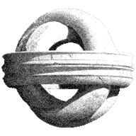
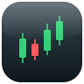

The launchpad inside a tweet.


this page's address
Official $TP contract: BctFsB2NaoKZcqXxhFFvDAJ4vdgxuunsg1g5m8CSEQDN Copy
BctFsB2NaoKZcqXxhFFvDAJ4vdgxuunsg1g5m8CSEQDN
Open full screen · @tweetpad_io